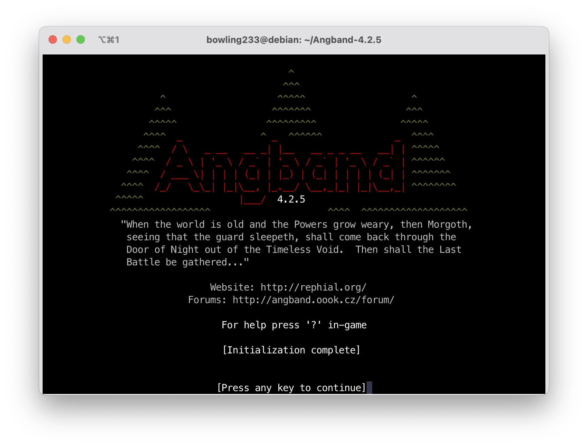
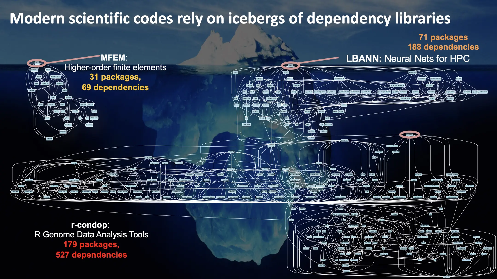
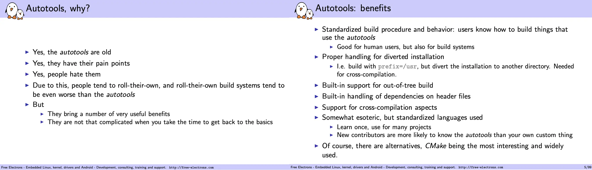
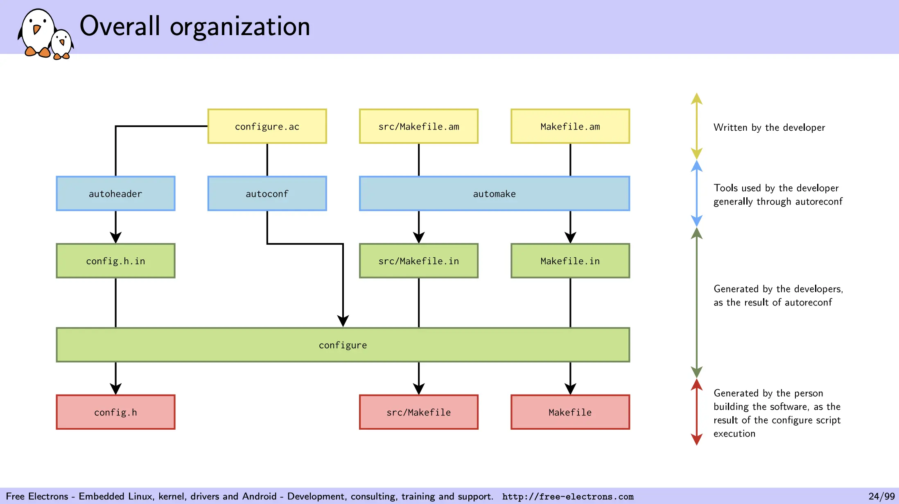
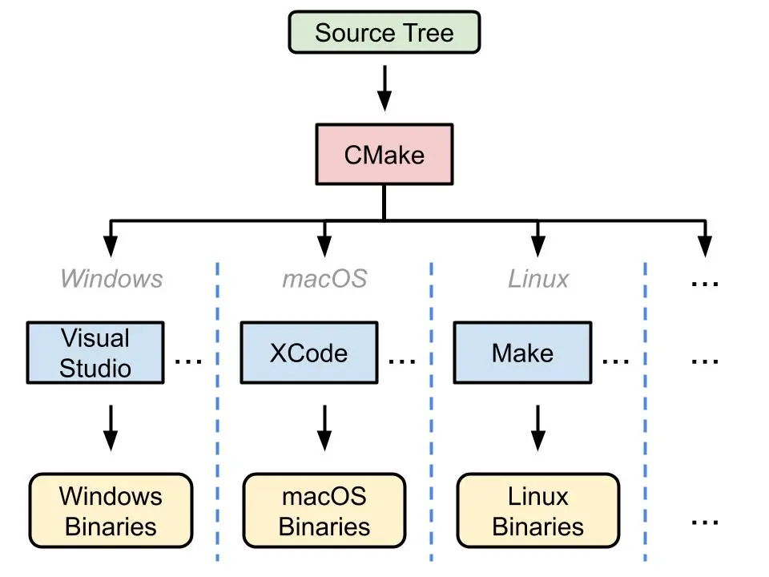
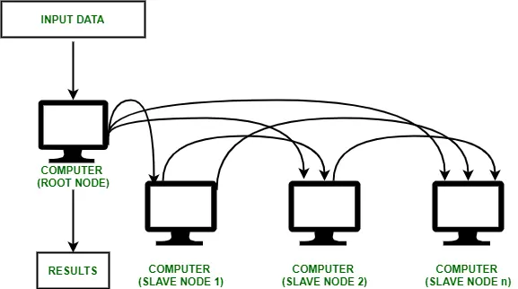
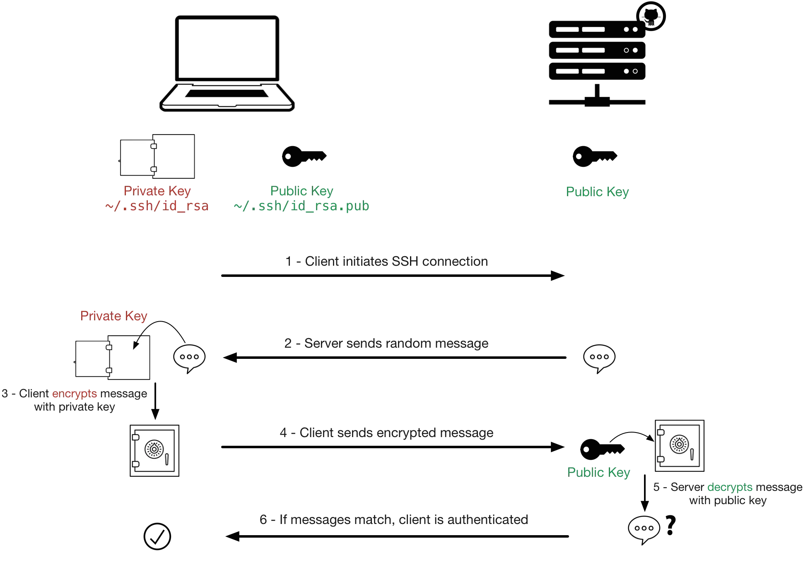
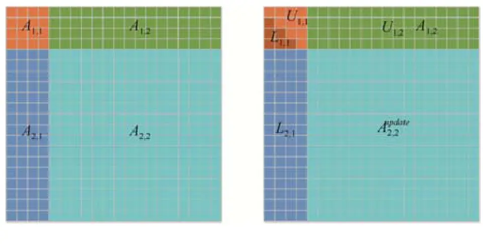
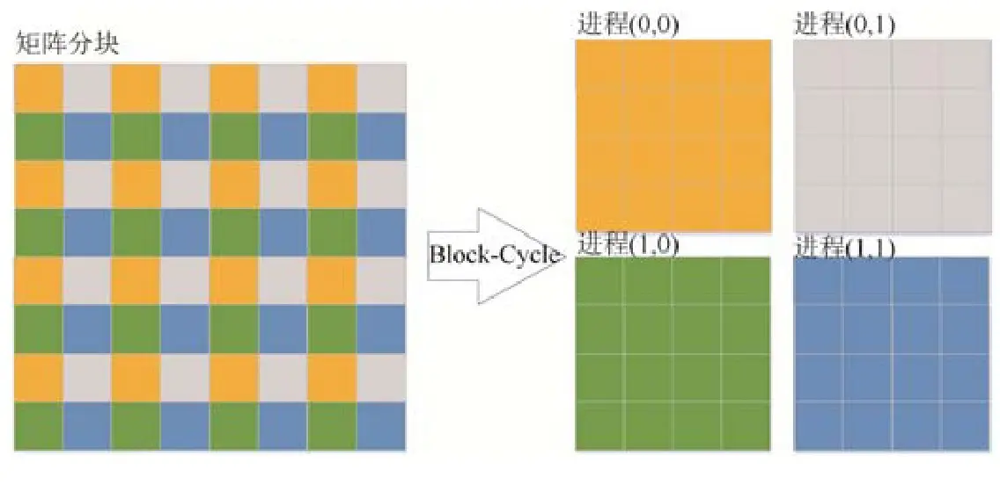

实验一：简单集群搭建¶
仅供参考
文档中实验步骤相关命令以及脚本等仅供参考，不要无脑直接复制粘贴！因为这些都依赖于你当前的机器环境，可能会导致你的系统环境乱套。
关于 Agent
当前 Agent 对于系统环境搭建的活已经非常熟悉了，在我们的测试下，他们可以在很短的时间内完成 Lab 1 实验内容。 当然，我们希望你在实验中充分使用 Agent 工具，但是不要把 Agent 当成你的牛马员工，所有事情给他干，你至少需要知道你在做什么。 在自己的脑海中构建起一个完整的知识架构，远比背下各种奇奇怪怪的命令行要重要。
STOP！OPENCLAW
来源：@summeryue on X
{kind=link}
这个实验从编译到部署的每一个步骤，Agent 都可能帮你完成——也都能帮你搞砸。永远检查它干了什么。
导言：计算机集群¶
在 Lab 0 中，我们已经获得了 Linux 虚拟机环境，熟悉了 Linux 命令行的基本操作，对 Linux 系统的文件路径、用户权限、环境变量等基本概念有了一定的了解。在接下来的实验中，这些基础知识将会被广泛应用。
本次实验或许是你第一次接触到计算机集群。所谓计算机集群，就是将多台计算机连接在一起，通过网络协同工作，以完成一些大规模的计算任务。为什么我们需要计算机集群呢？因为单体的制造成本和性能是有限的。制造芯片时，人们想把单个处理器的性能提升到极致，但是遇到了物理限制：一块集成电路上的晶体管数量越多，设计就越复杂，发热就越严重，功耗就越大，性能就越低。因此，人们开始尝试将多个处理器连接在一起，就有了现代多核处理器。制造计算机时，也可以放置多个 CPU（常见的服务器一般都具有两颗），但放置更多只会增加单台计算机的设计和制造难度。与其想着怎么把单体造强，不如想着怎么把多个单体连接在一起，怎么让它们协同工作，这就是并行计算思想的由来。
实验内容和要求¶
本次实验，我们将先从源码构建 OpenMPI、BLAS 和 HPL，然后配置 NFS 共享文件系统和 Slurm 作业调度系统，最后通过 Slurm 提交 HPL 任务进行性能测试，并提交测试结果和实验报告。
如何食用本 Lab
本 Lab 有 知识讲解 和 任务 两部分，其中 知识讲解 不需要体现在报告中。
- 本次实验对基础知识介绍得比较详细，其中蓝色框框是希望你 take home 的知识点，请确保理解。
- 任务部分需要自行完成，请遵守诚信守则。
- 和 Lab 0 一样，如果你对这些内容轻车熟路，就不需要阅读知识讲解，直接完成任务即可。
提交内容¶
总的来说，你需要先阅读 知识讲解 部分，然后逐个完成 任务 部分，并将自己完成的过程记录在实验报告中。你需要提交以下的内容：
- 使用中文完成的实验报告 PDF 文件，内容至少包括下面的过程：
- 请简要说明本次实验中 AI Agent 的使用情况，包括所采用的 Agent 平台（或模型服务提供方）、使用的客户端/IDE，以及其在实验中的具体辅助作用。
- 集群概况：说明你的节点数量、节点角色、IP 地址、操作系统、CPU/内存配置、网络连接方式、共享目录和 Slurm 分区。
- 软件编译：下载 OpenMPI、BLAS 和 HPL 的源代码并编译安装。
- NFS 配置：准备多节点环境，搭建 NFS 服务器和客户端，使所有节点能够访问同一个共享目录，并给出读写验证结果。
- Slurm 配置：搭建一个可用的 Slurm 集群，至少包含一个控制节点和一个计算节点。
- HPL 作业提交：通过 Slurm 提交 HPL 任务，记录 Slurm 作业脚本、HPL 输出和性能结果。
- Bonus：如果完成 k3s，请记录节点加入、Pod/Deployment 运行和服务访问的验证结果，或者其他任何你自由探索的结果。
- 如果你尝试进行 HPL 调优，请详细说明调优的细节，并且附上 HPL 输出结果文本文件
- Slurm 作业脚本和对应的输出文件。
- 如果修改了代码，请提交修改后的代码和一份修改说明。
如果有其他较长的纯文本形式的代码或者配置文件，无需包含在实验报告正文中，可以和 HPL 结果文件一样，作为附件提交。
如何写一份好的实验报告
- 包含以下基本内容：
- 实验环境：软硬件的细微差别也有可能导致实验过程和结果产生较大差异，因此记录实验环境是非常重要的。这包括宿主机硬件情况，操作系统版本，所使用的 Hypervisor 种类，虚拟机的硬件配置以及网络配置。
- 实验过程：实验手册已经给出了详细步骤，因此这一部分你不需要再赘述，只需要给出关键截图证明你按步骤完成了即可。我们希望看到的是你在实验过程中遇到了哪些问题，以及你是如何解决的。
- 实验结果及分析：对于希望你照做的实验（比如本次实验），本就有一个标准的结果，不需要进行分析。但如果是需要你自己设计的实验，那么你需要对实验结果进行分析，解释为什么会得到这样的结果。
- 详略得当。一般来说，下面这几种实验报告都不是好的实验报告：
- 长达数十页的报告：贴满截图和源代码，正文内容却很少。
- 简陋的实验报告：只有几张截图，没有有效的解释。
- 长段的 ai 生成内容：大段大段的 ai 生成的正确的废话，看不到学生的思考过程。
- 关于 AI 内容：
- 我们希望报告里更多的是你自己的面对困难的解决记录，以及实验心得体会。（请保持高含人量）
注意事项
这些注意事项来源于历年同学们的常见问题，希望你能够避免：
- 不要滥用
root用户，尽量使用普通用户进行操作。在需要权限的时候使用sudo，这能够提醒你谨慎操作。也不要频繁在root用户和普通用户之间切换，除非你明白自己在做什么，否则只会让两边环境都变乱。在root用户下工作与普通用户有诸多细微不同，也很容易破坏环境，下面就是一个例子：
{kind=link}
- 理解工作目录和家目录这两个目录。工作目录是你当前所在的目录，家目录是你登录时所在的目录。工作目录与程序在哪无关，与你现在在哪有关。很多程序默认在工作目录下寻找文件（比如 HPL）。如果你在
/dir下运行它，而配置文件在/home/user下，那么程序就会找不到配置文件。在运行 MPI 时，也要注意工作目录的问题。
知识讲解：从源码构建 Linux 应用 - 以 Angband 为例¶
前置知识
掌握 Lab 0 中的内容：Linux 命令行基本操作、软件包管理、用户、文件系统、文件权限。
学习目标
这一部分的学习目标是了解如何从源代码构建并安装 Linux 应用。这是一个非常基础的操作，但在实际的软件开发和运维中经常会遇到。我们强烈推荐动手跟着尝试一下，但如果时间紧张，也请详细阅读文档展示的过程并理解知识。我们希望这部分的讲解能够有助于你完成后续 OpenMPI 等软件的构建和安装。
这一部分不需要体现在报告中。
日常使用电脑时，你安装软件的流程一般是：去网上搜索 -> 下载安装包 -> 点击安装 -> 完成，这是因为 Windows / macOS 用户的设备架构统一，并且依赖库比较完备，所以二进制文件基本通用，只要别人替你编译好就能够直接运行。而在 Linux 生态中，使用者的 CPU 架构以及其他硬件和软件配置极其多样。比如在 Lab0 中，或许你已经在 这个页面 见到过 Debian 为相当多的指令集发布了 ISO，例如：
- amd64：也称为 x86-64 或 x64，是 64 位 x86 指令集架构。它是 Intel 和 AMD 64 位处理器的通用指令集架构。这种架构通常用于个人计算机、服务器和工作站等通用计算设备上。
- arm64：也称为 AArch64，是 ARMv8-A 及其之后架构的 64 位指令集。它设计用于移动设备、嵌入式系统和服务器等多种用途的设备上，具有较低的功耗和更好的性能。
- i386：也称为 x86 或 IA-32，是 Intel 32 位 x86 指令集架构。它是早期个人计算机和服务器的常见架构，现在仍然在一些老旧的设备和系统中使用。
我国自研的龙芯 LoongArch、近年来很火的 RISC-V 等架构也在逐渐普及。其中，RISC-V 已经在 Debian 13 中得到官方支持，LoongArch 则预计将在 Debian 14 中得到官方支持。
由此可见，面对如此多样的指令集结构，软件开发者想要为每一种架构都编译一份软件包十分困难。因此，在 Linux 生态中，源代码是最通用的软件分发形式。
在 Linux 生态中，源代码是最通用的软件分发形式。
在该部分，我们将以 Angband（一个开源的 ASCII 地牢猎手游戏）为例，学习如何从源代码构建软件包，并解决构建过程中可能遇到的问题。
软件包源码的组织方式¶
进入 Angband 的网站，点击 Source Code，下载最新的源代码压缩包并解压。
wget https://github.com/angband/angband/releases/download/4.2.5/Angband-4.2.5.tar.gz
tar xvf Angband-4.2.5.tar.gz
cd Angband-4.2.5
ls
如果你在下载时遇到了问题
你的虚拟机可能因为网络问题连不上 GitHub。此时可以在宿主机下载好，然后通过 scp 命令传输到虚拟机中。
当然你也可以自行探索虚拟机网络配置，自由探索的结果可以写入你的报告里。
熟悉开源软件源代码的目录结构
一般的开源软件包源码的目录结构如下所示：
.
├── bin：存放软件包的可执行文件（binary）。
├── src：存放软件包的源代码文件（source）。
├── lib：存放软件包的库文件（libraries）。
├── docs：存放软件包的文档文件，可能包括用户手册、API 文档等。
└── README.md：包含软件包的说明文档，通常包括软件包的简要介绍、安装指南和使用说明。
通常在目录的顶层有一个 README 文件，这就是该软件包的说明书，通常包含：
- 该应用程序的简介。
- 依赖性：你需要在你的系统上安装其他什么的软件，以便这个应用程序能够构建和运行。
- 构建说明：你构建该软件所需要采取的明确步骤。偶尔，他们会在一个专门的文件中包含这些信息，这个文件被直观地称为 INSTALL。
查看 README.md 文件，我们发现 Angband 的维护者给出了在线说明的链接，描述了如何编译代码。跟随 compile it yourself 的链接前往网站，查看 Linux 章节的 Native builds 小节。你能找到构建 Angband 的命令吗？
Check your answer
网站上还描述了依赖性：“有几个不同的可选构建的前端（GCU、SDL、SDL2 和 X11），你可以使用诸如 --enable-sdl，--disable-x11 的参数配置。” 目前这可能对你来说看起来像天书，但你经常编译代码后就会习惯。
Angband 非常灵活，无论是否有这些可选的依赖，都可以进行编译，所以现在，假装没有额外的依赖。
执行它们，如果遇到错误，尝试解决。在下面的自动化构建工具一节，我们将解释这些命令。
帮帮我！
有位同学在运行 ./configure 时遇到了这样的错误：
checking build system type... aarch64-unknown-linux-gnu
checking host system type... aarch64-unknown-linux-gnu
checking for a BSD-compatible install... /usr/bin/install -c
checking for sphinx-build... no
checking for sphinx-build3... no
checking for sphinx-build2... no
checking for cc... no
checking for gcc... no
checking for clang... no
configure: error: in `/home/user/Angband-4.2.5':
configure: error: no acceptable C compiler found in $PATH
See `config.log` for more details
请问这位同学应该怎么做？
答案
这位同学需要安装 C 编译器。在 Debian 发行版中，你可以通过 Debian 搜索软件包 搜索你需要的软件包，也可以直接在互联网搜索。在这里，我们常用 gcc 作为 C 编译器，如果你想要更多的编译器，还可以安装 build-essential 软件包，它包含了全面的编译器和构建工具。
然后再次运行 ./configure。
正确执行完成后，你会在 src 目录下找到 angband 可执行文件。尝试运行它，看看你能否看到游戏界面。
令人头疼的依赖关系与链接库¶
链接
实际的工程开发中，采用的一定是多文件编程：编译器将每个代码文件分别编译后，还需要将它们合在一起变成一个软件，合在一起的过程就是链接的过程。这些内容在 C 语言课程中应该会覆盖到，但如果你没有学过，也不用担心，可以学习一下翁恺老师的 智云课堂 或者 MOOC（第五周）中对大程序结构的详细介绍。
链接分为静态链接和动态链接。静态链接是指在编译时将库文件的代码和程序代码合并在一起，生成一个完全独立的可执行文件。动态链接是指在程序运行时，加载库文件，从而节省存储空间，提高程序的复用性和灵活性。
- 静态链接
- 如果你的程序与静态库链接，那么链接器会将静态库中的代码复制到你的程序中。这样，你的程序就不再依赖静态库了，可以在任何地方运行。但是，如果静态库中的代码发生了变化，你的程序并不会自动更新，你需要重新编译你的程序。
- 在 Linux 系统上，静态库的文件名以
.a结尾，比如libm.a。在 Window 上，静态库的文件名以.lib结尾，比如libm.lib。静态库可以使用ar（archive program）工具创建。
- 动态链接
- 当你的程序与动态库链接时，程序中创建了一个表。在程序运行前，操作系统将需要的外部函数的机器码加载到内存中，这就是动态链接过程。
- 与静态链接相比，动态链接使程序文件更小，因为一个动态库可以被多个程序共享，节省磁盘空间。部分操作系统还允许动态库代码在内存中的共享，还能够节省内存。动态库升级时，也不需要重写编译你的程序。
- 在 Linux 系统上，动态库的文件名以
.so结尾，比如libm.so。在 Window 上，动态库的文件名以.dll结尾，比如libm.dll。
动态链接具有上面描述的优点，因此一般程序会尽可能地执行动态链接。
链接相关的问题可能出现在链接时（静态链接）、程序运行前和运行中（动态链接）。下面是一些常见的问题。
{kind=link}
未定义的引用
执行链接时最令人头疼的问题。首先应当阅读库的使用说明，接下来搜索缺失的符号可能位于哪些库文件中。
{kind=link}
缺失 .dll
常用 Windows 的同学多多少少见过这个报错，这也是缺少动态链接库造成的。
{kind=link}
缺失 .so
Linux 上的动态库一般通过 apt 管理，搜索相应的包 并安装即可。
如果你的虚拟机之前没有安装过相关软件包，那么你大概率无法成功看到游戏界面，它什么输出都没有就退出了。
回看刚刚 ./configure 的输出，它其实给出了警告：
Configuration:
Install path: (not used)
binary path: (not used)
config path: /home/user/Angband-4.2.5/lib/
lib path: /home/user/Angband-4.2.5/lib/
doc path: (not used)
var path: /home/user/Angband-4.2.5/lib/
gamedata path: /home/user/Angband-4.2.5/lib/
documentation: No
-- Frontends --
- Curses No; missing libraries
- X11 No; missing libraries
- SDL2 Disabled
- SDL Disabled
- Windows Disabled
- Test No
- Stats No
- Spoilers Yes
- SDL2 sound Disabled
- SDL sound Disabled
configure: WARNING: No player frontends are enabled. Check your --enable options and prerequisites for the frontends.
搜索一下 ncurses 库，你会了解到它是一个用于在 UNIX-like 系统上进行文本界面操作的库。它提供了一套 API，使得开发者能够在终端上创建和管理文本界面应用程序，包括窗口、菜单、对话框、文本输入等功能。Angband 使用了了 ncurses 库来实现游戏界面。但这个库不会被包含在 Angband 的源代码中，也没有默认包含在系统中，因此我们需要手动安装。通过网络搜索，我们得知 ncurses 库包含在 libncurses5-dev 软件包中，我们可以通过下面的命令安装它：
安装完成后再次运行 ./configure，它应当能够识别到 ncurses 库：
再次运行 make，运行生成的 src/angband，你应当能够看到游戏界面了。
{kind=link}

在刚刚的过程中，我们解决了一个简单的依赖问题：Angband -> ncurses。在 HPC 应用中，实际的依赖关系极其复杂：
{kind=link}

来源：Managing HPC Software Complexity with Spack
别担心，接下来的自动化工具和包管理器会帮你解决一切问题（当然也可能产生一堆问题）。
What we have learnt
- 留意
./configure的输出，它一般负责检查系统环境是否满足软件包的依赖。 - 使用
apt安装缺失的库。
不怎么自动的自动化构建工具¶
在上面的例子中，我们使用了 ./configure 和 make 来构建软件包，它们就是 GNU Autotools 构建系统的一部分。如果没有它们，我们就需要手动写一行行命令、检查系统配置是否满足要求、使用编译器来编译源代码、链接器来链接目标文件，这是一项非常繁琐的工作。
自动化构建工具简介
自动化构建工具（Automated Build Tools）是用于自动化软件构建过程的工具，它们可以自动执行编译、链接、测试和部署等一系列操作，从而减少手动操作，提高软件开发的效率和质量。
自动化构建工具的主要功能包括：
- 编译和链接：自动化构建工具可以自动执行源代码的编译和链接操作，生成可执行文件、共享库或其他目标文件。
- 依赖管理：在构建过程中，自动化构建工具可以检测源代码文件之间的依赖关系，并且只重新构建发生变化的文件，从而加快构建速度。
- 代码检查：自动化构建工具可以集成代码静态分析和代码风格检查工具，帮助开发者发现潜在的代码问题并提出改进建议。
- 单元测试：自动化构建工具可以自动运行单元测试，并生成测试报告，帮助开发者确保代码的质量和稳定性。
- 打包和部署：自动化构建工具可以自动将构建好的软件打包成可分发的安装包，并且自动部署到指定的环境中。
自动化构建工具的出现主要是为了解决软件开发过程中的重复性、繁琐性和容易出错的问题。通过自动化构建工具，开发者可以将重复性的任务交给计算机自动执行，节省了大量的时间和精力。同时，自动化构建工具可以提高软件构建的一致性和可重复性，减少了由于人为操作而引入的错误，提高了软件的质量和稳定性。因此，自动化构建工具已经成为现代软件开发过程中不可或缺的一部分。
学习使用自动化构建工具、理解它的工作原理并在使用中解决它遇到的错误是一个比较痛苦的过程，但它相比原始的手动构建过程，能够大大提高软件开发的效率。下面的两张 PPT 把这一原因解释得很清楚：即使 Autotools 很老、很难用、人们厌恶它，但它提供了一套标准的解决方案，能够在大部分项目中通用。Learn once, use everywhere。
{kind=link}

来源：GNU Autotools: A Tutorial
现在，让我们简单了解一下常见的两种构建工具的使用方法。
GNU Autotools
GNU Autotools 是一套用于自动化软件构建的工具集，包括 Autoconf、Automake 和 Libtool。它们可以帮助开发者在不同的操作系统和编译器上构建软件包，提供了一种跨平台的构建解决方案。
- Autoconf：Autoconf 是一个用于生成配置脚本的工具，它可以根据系统环境和用户选项生成一个可移植的配置脚本，用于检查系统环境、生成 Makefile 和配置头文件等。
- Automake：Automake 是一个用于生成 Makefile 的工具，它可以根据 Makefile.am 文件生成标准的 Makefile 文件，用于编译和链接源代码。
- Libtool：Libtool 是一个用于管理库文件的工具，它可以处理库文件的版本号、共享库和静态库的生成、链接和安装等操作。
GNU Autotools 的工作流程一般是：首先使用 Autoconf 生成 configure 脚本，然后使用 configure 脚本生成 Makefile 文件，最后使用 Makefile 文件编译和链接源代码，生成可执行文件或库文件。写成命令就是：
流程中的每一个环节都可以根据需要进行定制。如下图：

来源：GNU Autotools: A Tutorial
{kind=link}
要如何修改这些文件，应当阅读项目文档如 README 和 INSTALL 等文件。有时，也可以通过为这些命令添加参数来修改行为。
回看 Angband 最开始的软件包内容，你会发现其中只有 ./configure，没有 Makefile。Makefile 是在你运行 ./configure 后生成的。在接下来的任务部分，你也会遇到无需 ./configure 而是需要修改 Makefile 的情况。总之，GUN Autotools 提供的是一个高度可自定义的框架，具体怎么使用一定要阅读软件包的文档。
CMake
CMake 是一个更加现代化的开源的跨平台的构建工具。它使用一种类似于脚本的语言来描述构建过程，然后根据这个描述生成相应的构建文件。与 GNU Autotools 相比，它提供了更多的功能，与更多的现代软件如 IDE 实现了集成，因此在一些项目中取代了 Autotools。但编写 CMakeLists.txt 也比 Makefile 更为抽象，理解和使用难度也更大。但是在当前的Agent时代，我们可以让LLM帮我们审查长而复杂的CMakeLists.txt。

来源：Why Using CMake - Riccardo Loggini
{kind=link}
CMake 的另一大优势是缓存。CMake 会在第一次运行时生成一些缓存文件，这个文件记录了所有的配置信息，包括编译器、编译选项、依赖库等。这样，当你修改了源代码后，只需要重新运行 CMake，它就会根据缓存文件重新生成构建文件，而不需要重新进行检查、配置和生成。对于大型项目的增量开发和构建来说，这极大地节约了时间。
CMake 的工作流程一般是：首先编写 CMakeLists.txt 文件，描述项目的目录结构、源代码文件、依赖库等信息，然后使用 CMake 工具生成构建文件，最后使用构建工具（如 make、ninja 等）编译和链接源代码，生成可执行文件或库文件。对应的命令如下：
Angband 也提供了 CMake 的构建方式。查看 Angband 在线文档，你能找到使用 CMake 构建以 GCU 为前端的命令吗？
你应该能看到 Angband 程序直接生成在该目录下，同时 lib 等必要的目录也被拷贝了一份。这种构建方式不会污染源代码目录，是一种比较好的实践。
知识讲解：集群环境搭建与配置¶
前置知识
掌握 Lab0 中的内容：虚拟机、网络、SSH。
集群节点间的连接与互访¶
计算机之间通过网络连接。在网络中，有两个重要的地址：MAC 地址和 IP 地址。通过 Lab 0 的学习，你应该理解了这两种地址如何通过 ARP 协议联系在一起，也理解了虚拟机中的 NAT 网络。做任务时，你需要克隆虚拟机。克隆出来的新虚拟机的 MAC 地址与原来的虚拟机相同。思考一下，如果同时启动这两台虚拟机，它们能正常通信吗？你可以参考 Duplicate MAC address on the same LAN possible? - StackExchange。
计算机集群（Cluster）是连接在一起、协同工作的一组计算机，集群中的每个计算机都是一个节点。在集群中，由软件将不同的计算任务（task）分配（schedule）到相应的一个或一群节点（node）上。通常会有一个节点作为主节点（master/root node），其他节点作为从节点（slave node）。主节点负责调度任务（当然也可能负责执行部分任务），从节点负责执行任务。此外，也通常会有一个共享的文件系统，用于存储任务数据和结果。这些技术会在后面的 NFS 和 Slurm 小节中介绍。
{kind=link}

来源：An Overview of Cluster Computing - GeeksforGeeks
在 Lab 0 中，我们已经学习了如何通过 SSH 使用密码访问虚拟机。在集群中，节点之间的互访往往也通过 SSH 完成，但要求无交互（non-interactive）。想要实现无需输入密码就能互相认证，就需使用 SSH 的密钥认证（key-based authentication）。
SSH 密钥认证基于密码学中的非对称加密算法。在 SSH 密钥认证中，用户有两个密钥：私钥（private key）和公钥（public key），它们一一配对：用私钥加密的数据，只有用对应的公钥才能解密，同理，用公钥加密的数据，只有用对应的私钥才能解密。私钥只有用户自己知道，公钥可以公开。
所谓配置 SSH 密钥认证，就是让服务器信任该公钥，允许持有该私钥的用户连接。(对这一过程感兴趣的同学，可以阅读下面的简单介绍。)
SSH 密钥认证的原理
用户可以将公钥放在服务器上，当用户连接服务器时，服务器会用公钥加密一个随机数发送给用户，用户用私钥加密这个随机数，然后用这个随机数加密数据发送给服务器，服务器用公钥解密数据。根据非对称加密的原理，如果用户能够成功加密，则说明用户拥有该私钥，这样就验证了用户的身份，连接可以成功建立。

来源：How SSH encrypts communications, when using password-based authentication? - StackOverflow
{kind=link}
在集群中，我们需要在主节点中生成密钥对，将主节点的公钥放在从节点上，这样主节点就能够通过 SSH 密钥认证连接到从节点。你可以阅读 How To Configure SSH Key-Based Authentication on a Linux Server - DigitalOcean 了解如何配置 SSH 密钥认证。基本操作如下：
需要注意的是，认证基于用户。不是说主节点可以连接到从节点，而应当说主节点上的某个用户可以连接到从节点上的某个用户。如果在主节点上为 root 用户生成密钥对，却在从节点上将公钥放置进 test 用户的 .ssh/authorized_keys 文件中，那么显然无法以密钥认证的方式登录到从节点的 root 用户。
MPI: 一个程序如何在不同机器间通信¶
MPI 指的是 Message Passing Interface，是程序在不同机器间发送、接收数据的接口标准，类似于定义了一套通信的 API。它被设计用于支持并行计算系统的架构，使得开发者能够方便地开发可移植的消息传递程序。MPI 编程能力在高性能计算的实践与学习中也是非常基础的技能。
而 OpenMPI 是一个开源的 MPI 标准的实现，由一些科研机构和企业一起开发和维护。在接下来的任务中，我们需要编译安装 OpenMPI。
mpirun 是 OpenMPI 提供的 MPI 启动程序，负责在指定的节点上启动 MPI 程序，此后程序间的通信由 MPI 库负责。可以为 mpirun 指定参数，比如启动的进程数、启动的节点等。阅读 10.1. Quick start: Launching MPI applications - OpenMPI main documentation 和 10.6. Launching with SSH - OpenMPI main documentation，了解如何使用 mpirun 通过 SSH 的方式启动 OpenMPI 程序，如何指定启动的节点和进程数，如何指定工作路径。
回答以下问题
- 如何为
mpirun指定节点和进程数？ - 如何为
mpirun指定工作路径？ - 如果不指定工作路径，
mpirun会在哪个路径启动程序？如何验证你的答案。
使用 mpirun 在集群中运行 MPI 程序，可以指定节点、进程数和工作路径等。
使用 mpirun 在多节点运行程序时，需要配置各计算节点之间的 SSH 免密登录
共享文件系统：集群如何共享文件¶
在前面的 mpirun 例子中，MPI 只负责启动进程和进程间通信，不负责帮你分发可执行文件、输入文件或输出目录。如果你在 node01 的 ~/hpl-2.3/bin/Linux_PII_FBLAS 中运行 mpirun --hostfile hostfile ./xhpl，其他节点也必须能在相同路径找到 xhpl 和 HPL.dat。
解决这个问题的一种牢方法是手动把同一份目录复制到每个节点。不过，节点一多，这种方法就会变得费时费力，也很难保证每个节点上的文件版本完全一致。因此，真实集群通常会使用共享文件系统：多个节点通过网络访问同一套目录树，让可执行文件、输入数据、作业脚本和输出结果出现在一致的位置。对用户来说，它看起来像普通本地目录；对系统来说，读写请求会被转发到远端服务器、分布式存储集群或专门的元数据服务。
共享文件系统的实现有很多种，我们可以了解一些比较经典的共享文件系统，这些文件系统的设计目标各不相同，有的偏向通用分布式文件存储，有的偏向结合对象存储作为后端。选择时需要看性能、容错、部署复杂度和实际使用场景。
- NFS：最容易上手的网络文件系统之一，采用 server / client 模型。服务器导出目录，客户端把远程目录挂载到本地路径。它很适合小集群共享目录，提供了极其强大的性能，但单台服务器容易成为性能和可靠性瓶颈。
- Lustre：HPC 场景中非常经典的并行文件系统，常用于大型超算集群。它会把元数据服务和对象存储服务拆开，并把大文件分布到多个存储目标上，以提高并行读写吞吐。部署和运维复杂度比 NFS 高很多，但更适合大规模并行 I/O。
- BeeGFS：强调部署相对灵活和高吞吐。它通常包含管理服务、元数据服务、存储服务和客户端模块，适合需要较高并发读写能力的集群。
- CephFS：Ceph 提供的文件系统接口，底层基于分布式对象存储。它更强调分布式存储、容错和可扩展性，同一个 Ceph 集群还可以提供块存储和对象存储能力；相应地，理解和维护成本也更高。
回答以下问题
- 共享文件系统和复制文件有什么区别？
- 共享文件系统为什么通常要求各节点使用相同的挂载路径？
- 共享文件系统通过什么方式来检查用户的一致性？
Check your answer
-
同一个文件在所有节点上最好出现在同一路径，例如都挂载到
/cluster/shared。这样 MPI 程序和 Slurm 作业脚本不用为不同节点写不同路径，也不需要判断“当前程序到底运行在哪台机器上”。 -
共享文件系统不是把文件提前复制到每台机器上，而是让多个节点通过网络访问同一份数据。不同文件系统的一致性模型和缓存策略不同，因此“什么时候看见”“读写是否立刻同步”的细节也可能不同。
-
Linux 文件权限最终依赖数字 UID/GID，而不是用户名字符串。如果
node01上的student是 UID 1000，node02上的student是 UID 1001，那么同一个文件在不同节点上就可能被理解成不同用户的文件。更完整的集群会配合 LDAP、FreeIPA、NIS 等统一身份服务来避免这类问题。
在本 Lab 中，node01 将作为 NFS 服务器，导出 /cluster/shared；node02、node03、node04 将作为 NFS 客户端，把同一个远程目录挂载到本地的 /cluster/shared。这样你只需要把 HPL 可执行文件、HPL.dat 和 Slurm 作业脚本放到这个共享目录中，所有节点都能看到同一份内容。
NFS 对初学者最容易出问题的是权限。原因在于 Linux 文件权限最终依赖数字 UID/GID。
用 NIS 统一用户信息
如果你希望更系统地解决这个问题，一个常见思路是配置 NIS（Network Information Service）这类统一身份服务，在各节点上创建并维护同一个共享用户信息源，让所有机器上的用户名、UID、GID 保持一致。这样做比在每台机器上手动创建一个同名用户更稳妥，也更接近真实集群环境中的做法。
相对地，手动在每个节点分别创建用户通常并不推荐：节点一多就很容易漏改、改错，后续修改密码、补充用户组、调整 UID/GID 时也容易出现不一致。对于小规模的集群，你可以手动保证一致。
作业调度系统¶
HPC 集群通常不会让用户随意 SSH 到计算节点并手工启动任务。原因很简单：集群资源是共享的，需要有系统统一管理用户访问、资源申请、队列等待、任务启动、运行限制和结果记录。这个系统通常称为作业调度系统。
没有作业调度系统也可以直接用 mpirun --hostfile 运行 MPI 程序。那还要作业调度系统干什么？试想一个集群上有几十个用户、几百个节点，全都手工 mpirun 抢资源——马上就会互相肘击，对性能造成极大的影响。作业调度系统解决的就是排队管理、资源隔离和记账审计的问题。
作业调度系统把 CPU、GPU、内存、节点和运行时间抽象成可申请的资源。用户提交作业脚本，说明需要多少资源、运行多久、输出写到哪里；调度系统根据分区策略、队列状态、用户权限和资源空闲情况决定作业什么时候运行、在哪些节点运行，并记录作业状态和历史信息。
常见的 HPC 作业调度系统包括：
- PBS：历史较早的批处理调度系统家族，常见形态包括开源的 OpenPBS 和商业版 PBS Professional。它强调批处理作业、队列策略和较成熟的 HPC 运维生态。
- LSF：IBM Spectrum LSF 是面向分布式 HPC 环境的商业工作负载管理平台和作业调度器，常见于企业级集群、商业软件环境和需要复杂策略管理的场景。
- Slurm：开源、可扩展的 Linux 集群管理与作业调度系统，广泛用于高校、科研机构和超算中心。本 Lab 选择 Slurm，是因为它部署门槛相对低、资料丰富，也能很好地展示现代集群中的资源分配和队列调度流程。
Slurm 是 HPC 集群中常见的作业调度系统。参考 Slurm Quick Start User Guide，它主要提供三类能力：
- 控制用户对计算节点的访问。
- 提供并行任务执行框架。
- 提供任务调度和队列。
理解 Slurm 时需要先区分几个基本概念：
- 节点（node）：一台可以参与计算的机器，例如
node02。 - 分区（partition）：一组节点构成的队列。
- 作业（job）：用户提交给 Slurm 的一次计算请求。
- 作业步骤（step）：作业内部的一次实际运行，例如一个
srun hostname或一个 MPI 程序启动。
常用命令包括：
sinfo：查看分区和节点状态。srun：直接启动一个并行任务，常用于快速测试或交互式运行。sbatch：提交批处理脚本，让作业进入队列并由 Slurm 调度运行。squeue：查看当前排队或运行中的作业。sacct：查看历史作业记录。是否可用取决于是否配置了 accounting。
一个典型的 sbatch 脚本会在文件开头用 #SBATCH 指定资源需求，例如作业名、分区、节点数、任务数、每个任务使用的 CPU 数和输出文件路径。下面是一个简化示例：
#!/bin/bash
# 设置作业名，便于在 squeue / sacct 和输出文件名中识别。
#SBATCH --job-name=hpl
# 指定提交到 debug 分区，分区可以理解为一组节点构成的队列。
#SBATCH --partition=debug
# 申请 2 个计算节点。Slurm 会从 debug 分区中挑选满足条件的节点分配给这个作业。
#SBATCH --nodes=2
# 每个节点启动 1 个 task；对 MPI 程序来说，通常对应每个节点 1 个 MPI rank。
#SBATCH --ntasks-per-node=1
# 每个 task 使用 1 个 CPU 核心，多线程程序需要按实际线程数调整这个值。
#SBATCH --cpus-per-task=1
# 把标准输出和标准错误写入文件；%x 是作业名，%j 是作业 ID。
#SBATCH --output=/cluster/shared/%x-%j.out
# 切换到 HPL 可执行文件和 HPL.dat 所在的共享目录。
cd /cluster/shared/hpl-2.3/bin/Linux_PII_FBLAS
# 启动 HPL 程序，MPI 进程数应与 Slurm 资源参数和 HPL.dat 中的 P/Q 设置匹配。
mpirun ./xhpl
其中 %x 会被替换为作业名，%j 会被替换为作业 ID。这类输出文件命名方式可以避免多次提交时互相覆盖。
Slurm 申请的资源会影响程序实际运行方式
如果提交作业时没有正确指定 --nodes、--ntasks、--ntasks-per-node、--cpus-per-task 等参数，程序可能只使用到很少的资源。运行 HPL 时，还需要让 HPL.dat 中的 P * Q 与实际 MPI 进程数一致。
MPI、Slurm、NFS 三者如何协作¶
这三个组件常被初学者混淆，但它们的分工非常清晰：
| 组件 | 职责 | 类比 |
|---|---|---|
| MPI (OpenMPI) | 进程间通信：让不同机器上的程序能互相发送/接收数据 | 快递员（负责送货） |
| Slurm | 资源调度：决定哪些节点运行任务、何时运行、分配多少资源 | 物流调度中心（决定谁来送、送到哪） |
| NFS | 共享文件系统：让所有节点看到同一份文件（可执行文件、输入数据、输出结果） | 共享仓库（所有人取同一份货） |
三者协作流程如下：
{kind=link}
两种启动方式对比¶
| 方式 | 命令 | 适用场景 | 说明 |
|---|---|---|---|
直接 mpirun |
mpirun --hostfile hostfile -np 4 ./xhpl |
调试、测试、小规模验证 | 手动指定节点，不依赖 Slurm |
| 通过 Slurm | sbatch run.slurm 或 srun ./xhpl |
正式运行、批量作业 | Slurm 自动分配资源并调用 MPI |
在 Slurm 作业中，srun 可以自动感知 Slurm 分配的节点和进程数，无需手工写 hostfile。但如果你使用的 OpenMPI 没有编译 Slurm/PMIx 支持，也可以在 sbatch 脚本中手动构建 hostfile 再调用 mpirun：
#!/bin/bash
#SBATCH --nodes=2
#SBATCH --ntasks=2
# 从 Slurm 环境变量生成 hostfile
scontrol show hostnames $SLURM_NODELIST > /tmp/hostfile
mpirun -np 2 --hostfile /tmp/hostfile ./xhpl
性能测试 Benchmark¶
HPL（high performance Linpack）是评测计算系统性能的程序，是早期 Linpack 评测程序的并行版本，支持大规模并行超级计算系统。其报告的每秒浮点运算次数（floating-point operations per second，简称 FLOPS）是世界超级计算机 Top500 列表排名的依据。
BLAS 是 Basic Linear Algebra Subprograms 的缩写，是一组用于实现基本线性代数运算的函数库。HPL 使用 BLAS 库来实现矩阵运算，因此需要 BLAS 库的支持。
HPL 通过求解线性系统来评估计算机集群的浮点性能
如果你对 HPL 的算法细节感兴趣，可以展开阅读下面的内容。
HPL 的算法细节
HPL 算法使用 64 位浮点精度矩阵行偏主元 LU 分解加回代求解线性系统。矩阵是稠密实矩阵，矩阵单元由伪随机数生成器产生，符合正态分布。
线性系统定义为：
行偏主元 LU 分解 \(N×(N+1)\) 系数矩阵 \([A,b]\)：
其中，\(P_r\) 表示行主元交换矩阵，分解过程中下三角矩阵因子 \(L\) 已经作用于 \(b\)，解 \(x\) 通过求解上三角矩阵系统得到：
HPL 采用分块 LU 算法，每个分块是一个 \(NB\) 列的细长矩阵，称为 panel。LU 分解主循环采用 right-looking 算法，单步循环计算 panel 的 LU 分解和更新剩余矩阵。基本算法如下图所示，其中 \(A_{1,1}\) 和 \(A_{2,1}\) 表示 panel 数据。需要特别说明的是，图示矩阵是行主顺序，HPL 代码中矩阵是列主存储的。

来源：复杂异构计算系统 HPL 的优化
{kind=link}
计算公式如下：
第 1 个公式表示 panel 的 LU 分解，第 2 个公式表示求解 \(U\)，一般使用 DTRSM 函数，第 3 个公式表示矩阵更新，一般使用 DGEMM 函数。
对于分布式内存计算系统，HPL 并行计算模式基于 MPI，每个进程是基本计算单元。进程组织成二维网格。矩阵 A 被划分为 \(NB×NB\) 的逻辑块，以 Block-Cycle 方式分配到二维进程网格，数据布局示例如图所示。

来源：复杂异构计算系统 HPL 的优化
{kind=link}
对于具有多列的进程网格，单步循环只有一列进程执行 panel 分解计算，panel 分解过程中每一列执行一次 panel 的行交换算法选择并通信最大主元行。Panel 分解计算完成后，把已分解数据广播到其他进程列。HPL 基础代码包含 6 类广播算法，可以通过测试选择较优的算法。
HPL 采用行主元算法，单步矩阵更新之前，要把 panel 分解时选出的最大主元行交换到 \(U\) 矩阵中，需要执行未更新矩阵的主元行交换和广播。主元行交换和广播后，每个进程获得完整的主元行数据。
矩阵更新包括两部分计算，一是使用 DTRSM 求解 \(U\)，二是使用 DGEMM 更新矩阵数据。
LU 分解完成后，HPL 使用回代求解 \(x\)，并验证解的正确性。
知识讲解到此结束。接下来是本次实验的任务部分。在开始动手之前，请先阅读下面的「集群概况」，对你将要搭建的集群做一个整体规划。
集群概况¶
在开始具体任务之前，请先规划你的集群结构，并在实验报告中给出一个简洁的集群概况。它不需要很长，但要让读者能快速理解你的实验环境。例如：
| 节点 | 角色 | IP 地址 | CPU / 内存 | 主要服务 |
|---|---|---|---|---|
node01 |
控制节点 | 192.168.136.130 |
2 vCPU / 4 GiB | NFS server, Slurm controller |
node02 |
计算节点 | 192.168.136.131 |
2 vCPU / 4 GiB | NFS client, Slurm compute |
node03 |
计算节点 | 192.168.136.132 |
2 vCPU / 4 GiB | NFS client, Slurm compute |
node04 |
计算节点 | 192.168.136.133 |
2 vCPU / 4 GiB | NFS client, Slurm compute |
同时说明：
- 使用的操作系统版本和虚拟化 / 容器 / 物理机环境。
- 节点之间如何解析主机名，例如
/etc/hosts、DNS 或容器网络。 - NFS 共享目录路径，例如
/cluster/shared。 - Slurm 分区名称和节点列表，例如
debug: node[02-04]。
任务一：从源码构建 OpenMPI、BLAS 和 HPL¶
学习 Makefile 基本语法
过程中你会遇到需要修改 Makefile 的步骤，因此希望你了解 Makefile 的基本语法。这一内容本应在 C 语言课程中完成讲授，不过大部分老师都省略了这部分。所以如果你没有学过，可以参考 Makefile 20 分钟入门 - 南方科技大学计算机系进行学习。
提醒：完成任务时请认真阅读文档，看不懂的地方可以搜索 / 问 GPT / 问助教。
这几个项目的依赖关系是：
flowchart LR
A[HPL] --> B[CBLAS] --> D[LAPACK]
A[HPL] --> C[OpenMPI] -.-> E[zlib]因此，你需要先编译 OpenMPI，BLAS 和 CBLAS，然后再编译依赖他们的 HPL。
zlib 是 OpenMPI 的可选依赖，用于改善数据传输性能，可在构建 OpenMPI 前安装 zlib1g-dev。
- 构建并安装 OpenMPI：
- 前往 OpenMPI 官网 下载最新版本源码。
- 解压源码，进入源码目录，阅读
README.md。 - 前往在线文档，查看构建和安装部分，按文档指示构建并安装 OpenMPI。
- 验证安装是否成功。提示：运行
ompi_info -all。
- 构建 BLAS，CBLAS：
- 下载指定版本 BLAS 源码：
src/lab1/blas-3.12.0.tgz, 并完成构建。 - 下载指定版本 CBLAS 源码：
src/lab1/CBLAS.tgz。相应修改Makefile.in后完成构建。我们希望你能解决所有报错。 - 如果没有错误，两个目录中都会生成一个
.a文件，这是待会要用到的静态链接库。
- 下载指定版本 BLAS 源码：
{kind=link}
- 构建 HPL：
- 前往 HPL 官网，下载最新版本源码。
- 解压源码，进入源码目录，阅读
README。 - 按文档指示构建 HPL。提示：上面的 BLAS 被称为 FBLAS，以与 CBLAS 区分。
- 如果没有错误，可以按文档中的描述找到
xhpl可执行文件。
不得不品的手动编译
在编译安装过程中会出现各种各样的问题，因为某些项目的源代码更新不频繁，可能在新的环境中无法正常编译，这是很常见的现象。 因此，即使有很多自动化编译安装的方法，我们还是希望你能够亲自动手编译安装这些项目，来积累解决编译失败问题的经验。
遇到问题时，你可以借助搜索引擎、StackOverflow 以及 AI 工具，尝试解决它们。
如果你遇到了无法解决的困难，可以参考下面的解答和说明。如果还是无法解决，请向我们反馈。
如果选择 Docker 路线
如果你计划使用 Docker 完成实验，可以把任务一的编译过程写进 Dockerfile，这样镜像构建时会自动完成所有编译。将编译步骤容器化有几个需要注意的地方：
- 构建上下文：BLAS 和 CBLAS 的源码包
blas-3.12.0.tgz和CBLAS.tgz位于仓库的src/lab1/下，需要在Dockerfile中通过COPY指令引入，或者构建时指定正确的context。 - 网络问题：OpenMPI 和 HPL 的源码需要从官网下载。如果构建时网络不稳定，可以考虑在宿主机提前下载好，再用
COPY指令带入镜像。也可以给 Docker 配置镜像加速器或代理。 - OpenMPI 的 PATH：通过
ENV指令设置的 PATH 只在构建过程中生效。容器运行后通过su - user登录时，.profile不会继承ENV中的 PATH。需要在Dockerfile中额外修改/home/user/.bashrc或/etc/profile，将/opt/openmpi/bin加入 PATH，否则后面运行mpirun时会找不到命令。LD_LIBRARY_PATH 同理。 - 镜像体积：编译 OpenMPI、BLAS 和 HPL 会产生较大的镜像。可以在一个
RUN指令中完成下载、编译、清理，利用 Docker 的分层缓存机制控制镜像大小。
如何阅读错误信息并处理错误
命令行与图形界面的一大不同就是，在命令的运行过程中会给出很多记录（Log）和错误信息（Error Message）。新手可能都有畏难心理，觉得这些信息很难看懂/看了也没有什么用，但很多时候解决方法已经在错误信息中了。举个例子，下面是运行 make 时产生的一些信息，你能指出错误是什么吗？
Check your answer
错误是第 6 行的 Makefile:47: Make.inc: No such file or directory。这个错误信息的开头是 Makefile:47，表示错误发生在 Makefile 的第 47 行。错误原因是 Make.inc 文件不存在。
那么如何解决这个问题呢？当然是去发生错误的地方看看。跳转到 /home/test/hpl/hpl-2.3/src/auxil/Linux_PII_CBLAS 这个文件夹，使用 ls -lah 命令查看文件夹中的文件，我们得到如下结果：
total 5.5K
drwxr-xr-x 2 test test 4.0K May 6 2024 .
drwxr-xr-x 3 test test 11.0K May 6 2024 ..
lrwxrwxrwx 1 test test 36 May 6 2024 Make.inc -> /home/test/hpl/hpl/Make.Linux_PII_CBLAS
-rw-r--r-- 1 test test 5.0K May 6 2024 Makefile
对比一下现在的位置：/home/test/hpl/hpl-2.3/，显然上面路径中是把 hpl-2.3 写成了 hpl。修改顶层 Makefile 中的路径即可解决问题。
总结步骤如下：
- 阅读提示信息，定位错误位置和原因（如果读不懂，去 Google 或扔给 ChatGPT）。
- 去错误现场，看看发生了什么。
- 根据提示和查阅得到的资料修复错误。
请在报告中体现
请务必在阅读本部分之前，先参考知识讲解，尝试自己构建 OpenMPI, BLAS 和 HPL。
- OpenMPI
sudo apt install -y zlib1g-dev
wget "https://download.open-mpi.org/release/open-mpi/v5.0/openmpi-5.0.3.tar.gz"
tar xvf openmpi-5.0.3.tar.gz
cd openmpi-5.0.3
./configure # 对于绝大多数软件包，不带参数将默认安装到 /usr/local/ 下
# 此时不需要修改 PATH 和 LD_LIBRARY_PATH 等
# 如果你使用 --prefix 参数指定了安装路径，则可能需要修改 PATH 和 LD_LIBRARY_PATH。
make
sudo make install # 安装到系统目录 /usr/local 需要 root 权限
sudo ldconfig # 更新动态链接库缓存
ompi_info --all # 查看安装信息
最后一步 ldconfig 在手册中没有没有记录，是比较容易遇到问题的一点。需要额外做这一步的原因可以在这个帖子找到：why is ldconfig needed after installation：
ldconfighas to be run because the dynamic linker maintains a cache of available libraries that has to be updated.libtooldoes this when run with libtool --mode=finish on the installation directory. I'm not sure if it does this when it thinks the directory isn't listed in the system library search path, though.I investigated this a bit further.
libtool --mode=finishis indeed called and it callsldconfig -n /usr/local/libbut that doesn't update the cache as I want.What does the
-nswitch? The man page says:
-nOnly process directories specified on the command line. Don’t process the trusted directories (/lib and /usr/lib) nor those specified in /etc/ld.so.conf. Implies -N.IIUC, that means that the cache is not rebuilt because I have
/usr/local/libin/etc/ld.so.conf. Why is ldconfig called with-n? I did some digging and found that it's been like that since beginning of time, or at least since v0.6a.
- BLAS
编译完成后，BLAS-3.12.0 目录下会生成 blas_LINUX.a 静态库。
- CBLAS
CBLAS 源码位于课程仓库 src/lab1/CBLAS.tgz。解压后，你需要修改 Makefile.in 中的以下关键项：
如果你使用的不是 gfortran 而是其他 Fortran 编译器（如 ifort），也需要相应调整 FC 和 FFLAGS。修改完成后，执行 make。如果编译成功，目录下会生成 cblas_LINUX.a 和 libcblas.a —— 这就是后续 HPL 需要用到的 CBLAS 静态库。
- HPL
wget "https://netlib.org/benchmark/hpl/hpl-2.3.tar.gz"
tar xvf hpl-2.3.tar.gz
cd hpl-2.3
cp setup/Make.Linux_PII_FBLAS .
vim Make.Linux_PII_FBLAS # 修改 Makefile
make arch=Linux_PII_FBLAS
Make.Linux_PII_FBLAS 中需要修改的部分有：
注意
修改仅供参考，请根据你的实际情况进行修改。
| 变量 | 参考值 | 说明 |
|---|---|---|
TOPdir |
$(HOME)/hpl-2.3 |
HPL 源码顶层目录 |
MPdir |
/usr/local |
MPI 安装目录 |
MPlib |
$(MPdir)/lib/libmpi.so |
MPI 库文件路径 |
LAdir |
$(HOME)/BLAS-3.12.0 |
BLAS 源码目录 |
LAlib |
$(LAdir)/blas_LINUX.a $(LAdir)/cblas_LINUX.a |
BLAS + CBLAS 静态库 |
LINKER |
/usr/bin/gfortran |
链接器（通常填 gfortran 路径） |
生成的可执行文件在 bin/Linux_PII_FBLAS 目录下：
任务二：配置 NFS 共享目录¶
多节点基础环境
你可以使用虚拟机、物理机、容器或其他你喜欢的方式搭建集群，但 NFS 服务器和 Slurm 守护进程都依赖较完整的 Linux 系统服务环境，因此推荐使用虚拟机或物理机完成。若使用容器，请自行处理 systemd、cgroup、特权模式、NFS 内核服务等额外问题。
在这个四节点结构里，node01 通常同时承担登录节点、NFS server 和 Slurm controller 的职责；node02 到 node04 作为计算节点，挂载共享目录并运行计算任务。MPI 程序在多节点上启动时，不会自动把可执行文件和输入文件同步到远端节点，所以需要通过 NFS 让所有节点看到同一份 xhpl、HPL.dat、作业脚本和输出目录。
因此，主机名解析、SSH 免密登录、UID/GID 一致性和路径一致性不是孤立的准备步骤，而是后面 NFS、Slurm 和 HPL 能否正常工作的基础。
可参考的文档：
我们希望搭建的是一种非常经典的小型 HPC 集群架构：一个控制节点和三个计算节点。控制节点负责提供统一入口和基础服务，计算节点负责执行实际计算任务。这样的设计常见于教学集群和中小型 HPC 环境，因为它把管理面和计算面分开，便于扩展、排错和权限控制。
本 Lab 使用的四个节点，命名和功能如下：
在这个架构中，node01 通常承担登录、NFS server 和 Slurm controller 的职责；node02 到 node04 作为计算节点，挂载共享目录并运行 Slurm compute daemon。实际生产集群通常会把登录节点、存储节点和管理节点继续拆开，但这个四节点结构已经足够帮助你理解经典 HPC 集群的核心组件。
我们需要 NFS，是因为 MPI 程序在多个节点上启动时，并不会自动把可执行文件、配置文件和输入数据分发到远端节点。以前面任务构建出来的 HPL 为例，如果你只在 node01 的某个本地目录里保留 xhpl 和 HPL.dat，显然计算节点上的 MPI 进程可能找不到同一路径下的文件。把 HPL 目录、作业脚本和输出目录放到 NFS 共享目录后，所有节点看到的是同一份文件，后续 Slurm 作业也能在一致的工作目录中启动。
你需要完成以下基础配置：
- 至少有 4 个在线 Linux 节点。
- 每个节点都有正确的主机名，例如
node01、node02、node03、node04。 - 所有节点都能通过主机名解析到彼此的 IP 地址。
node01能通过 SSH 免密登录其他节点。- 各节点上用于实验的普通用户具有一致的用户名、UID 和 GID。
- 各节点时间同步，避免认证服务因为时间漂移失败。
下面给出两种准备多节点基础环境的参考路线。虚拟机 / 物理机更接近真实集群；Docker 更适合快速构建可截图、可复现的多节点练习环境。
{kind=link}
克隆菜单
右键虚拟机->Manage->Clone
{kind=link}
完全克隆
Clone Type 两种都行，链接模式磁盘空间占用会小一点
{kind=link}
生成 MAC 地址
右键虚拟机->Settings->Network Adapter->Advanced->Generate
如何搭建集群可以参考 vmware workstation 的例子。建议依次完成下面几件事：先为每个节点设置明确的主机名和的 IP 地址，然后把这些节点地址写入所有节点的主机解析配置中，方便后续免密 ssh 连接。最后，依次确认主机名解析是否正常、SSH 免密登录是否可用，以及各节点上实验用户的 UID / GID 是否一致。
其中，/etc/hosts 中的节点映射可以参考“node01 到 node04 都有对应 IP”的形式来写，但请替换成你自己的实际地址。
如果不同节点上的同名用户 UID/GID 不一致，NFS 访问和 Slurm 作业权限都可能出现难以定位的问题。你可以重新创建用户，或在理解风险后修改 UID/GID。
Docker 路线下，这一部分的目标与虚拟机路线类似：先把一个稳定的四节点基础集群搭起来，再确认它已经具备后续实验需要的最小能力。我们希望大家使用 Docker Desktop 的 WSL2 后端 完成这一部分：Docker 引擎运行在 WSL2 提供的 Linux 环境中，它提供了一个真实的 Linux 内核环境，更适合设置后续 cgroup、挂载、网络和系统服务相关行为。
可以按下面的思路组织：
- 创建 Dockerfile：安装必要的依赖包和编译工具，配置 SSH 服务与 SSH 密钥认证，并在镜像中准备 OpenMPI、BLAS、CBLAS、HPL 所需环境。
- 构建和运行容器：使用
docker compose创建四个容器实例，建议统一命名为node01、node02、node03、node04。 - 配置容器网络：将四个容器放到同一个自定义网络中；如有需要，可以指定静态 IP，或者补充
/etc/hosts配置。 - 验证基础能力：确认主机名解析正常、
node01能免密登录其他节点、OpenMPI 可以通过hostfile在多个节点上启动进程，以及普通用户的 UID/GID 在各节点上一致。
可参考的文档：
Dockerfile 编写建议
编写 dockerfile 可能会遇到很多问题，这一过程可能会比较痛苦，建议详细阅读每次运行的日志，和 ai 工具记解决自己遇到的问题
Docker 集群搭建常见问题
- 容器间无法通过主机名互通：确认四个容器在同一个自定义网络中；如果使用静态 IP，检查 IP 是否落在同一子网内。
Host key verification failed：容器重建后 SSH host key 会变化，可使用StrictHostKeyChecking=accept-new，或清理本地known_hosts缓存。- 容器里没有完整 systemd：普通容器不是完整虚拟机，不一定会运行完整 systemd。SSH、MUNGE、Slurm、NFS 等服务可能需要由入口脚本或前台进程启动，而不是像虚拟机中那样完全交给 systemd 管理。
- cgroup 视图和真实机器不同：Slurm、k3s 等系统会读取 cgroup 信息判断资源限制和隔离边界。容器里看到的 cgroup 经过 Docker 与 WSL2 处理，和真实物理机或虚拟机上的视图可能不同。
- 何时需要特权模式：如果后续要在容器内运行 NFS、Slurm、k3s 等系统服务，通常需要在 Compose 配置中启用特权模式，这会放宽容器隔离。
- NFS 内核服务可能受限：NFS kernel server 依赖宿主内核能力。Docker Desktop + WSL2 环境下，NFS 能否正常导出目录取决于 WSL2 内核、容器权限和挂载方式。如果 NFS 无法真正工作，可以说明环境限制。
在真实集群中，用户通常希望无论登录到哪个节点，都能访问同一份代码、输入数据和输出结果。本任务要求你在 node01 上配置 NFS 服务，将一个共享目录挂载到所有计算节点。
本 Lab 以共享目录 /cluster/shared 为例，当然你也可以选择其他路径。
你需要完成以下要求：
先在 node01 上准备 NFS 服务端，把 /cluster/shared 创建出来并导出给实验网段；再在 node02、node03、node04 上准备 NFS 客户端，把同一个共享目录挂载到本地。验证时要真的从某个节点写入测试文件，再到其他节点检查能否读到同一份内容。后续的 HPL 可执行文件、HPL.dat、Slurm 作业脚本和实验输出都建议统一放到这个共享目录中。
请在报告中体现
在 node01 上先完成 NFS 服务端准备：安装相关组件、创建共享目录、配置导出规则并启动服务。然后在 node02、node03、node04 上完成客户端准备，把 node01 导出的共享目录挂载到本地。 确认是否成功时，不要只看服务状态，而是实际从不同节点写入和读取同一个测试文件，确认共享目录确实对所有节点可见。
node02 侧（挂载 NFS + 创建文件）：
{kind=link}
node01 侧（检查 NFS 服务 + 验证文件可见）：
{kind=link}
如果你希望开机自动挂载，可以把这条挂载关系写入客户端的自动挂载配置，这样节点重启后也会自动恢复共享目录。
Docker 下 NFS 常见问题
exportfs: /cluster/shared does not support NFS export：/cluster/shared如果位于容器默认的 overlay 文件系统上，即使已经挂载 nfsd 接口，也可能不能被 NFS kernel server 导出。- NFS 服务端没有真正注册：只写
/etc/exports或只运行exportfs不一定代表 NFS 已经可用。需要确认 rpcbind、nfsd、mountd 都已经在rpcinfo中出现。 - 客户端挂载点不存在：如果客户端报
mount point /cluster/shared does not exist，说明容器里还没有创建本地挂载目录，或者你复用了旧镜像 / 旧容器，入口脚本没有按当前版本执行。先确认容器内目录存在，再排查 NFS 本身。 rpc.statd is not running but is required for remote locking：容器环境下最常见的处理方式是在客户端挂载时关闭远程锁；本 Lab 只需要验证共享目录读写，不依赖 NFS 锁服务。- 挂载时报
access denied：检查/etc/exports里的网段是否覆盖 Docker 网络，例如 Compose 网络分配到的172.28.0.0/24。如果重建过网络，网段可能已经变化。
任务三：配置 Slurm 作业调度系统¶
Slurm 是高性能计算集群中常见的作业调度系统。前面的 MPI 例子中，我们手工指定 hostfile 并直接启动程序；在真实集群中，用户通常通过 Slurm 申请节点和 CPU 资源，由调度器决定作业何时、在哪里运行。
真实集群通常有很多用户同时提交作业，如果每个人都手动登录计算节点运行程序，就很容易出现资源抢占、节点过载、作业互相影响和结果难以追踪的问题。Slurm 的作用就是把“我想运行一个程序”变成“我向集群申请一组资源，然后由调度器决定何时、在哪些节点上启动程序”。
在本 Lab 的 Slurm 集群里，node01 运行 slurmctld，负责接收作业、维护队列和分配资源；node02 到 node04 运行 slurmd，负责在计算节点上启动任务。
可参考的文档：
资源有限？
如果你的宿主机内存吃紧，2 个节点也完全够用：node01 既当控制节点又当计算节点（在 slurm.conf 里把它加入分区即可）。下面的配置示例以 3 个计算节点为例，你只需按实有节点调整 NodeName 和分区里的 Nodes 列表。
你需要完成以下要求：
先在所有节点安装 Slurm 和 MUNGE，再保证所有节点使用同一份 MUNGE key，并准备好完全一致的 slurm.conf。接着让 node01 运行控制端服务、计算节点运行工作端服务，最后通过 sinfo、srun 和 sbatch 这些验证动作确认调度系统已经真正可用，且作业输出能够写入 NFS 共享目录。
请在报告中体现
在所有节点先安装 Slurm 和 MUNGE，再在 node01 生成 MUNGE key 并分发到其他节点，确保每台机器都使用同一份认证材料。随后启动并验证 MUNGE，确认它能正常签发和解签。接着用 slurmd -C 查看计算节点硬件信息，再在所有节点上准备完全一致的 slurm.conf；这个文件里涉及节点名、节点地址、资源数量和分区定义的内容都需要按你的实际环境填写。
Ubuntu 用户注意
Ubuntu 通过 apt 安装的 SLURM 期望配置文件位于 /etc/slurm-llnl/，而非 /etc/slurm/。如果你运行 slurmd 时遇到 ConditionPathExists=/etc/slurm-llnl/slurm.conf was not met 错误，可以任选以下方式之一解决：
Ubuntu 的 SLURM 更希望配置文件位于 /etc/slurm-llnl/，所以你需要让系统能够在那个路径下找到同一份 slurm.conf。最直接的做法是把配置放到正确目录；如果你更想保留 /etc/slurm/ 作为统一路径，也可以通过符号链接或者 systemd 覆盖来实现。三种方式任选一种即可，只要最终 slurmd 能读到同一份配置。
配置完成后，在 node01 上准备控制端运行所需的 spool 和日志目录，并启动 slurmctld；在 node02、node03、node04 上准备计算端运行所需的目录，并启动 slurmd。然后回到 node01 检查集群状态，确认节点出现在 sinfo 中并且状态正常，再根据需要恢复处于 down 状态的节点。
验证阶段可以先查看 sinfo 和 squeue，再用 srun 跑一个最小的 hostname 测试，确认调度器确实能把任务派到计算节点。之后准备一个最简单的 sbatch 作业脚本，放到 NFS 共享目录中提交，检查作业输出是否也能写回共享目录。
预期输出示例（sinfo 两节点 idle → sbatch 提交 → squeue 状态 → cat 结果）：
{kind=link}
Slurm 常见故障排查
以下按错误类别整理了常见问题和解决方案：
Slurm 启动与配置
| 错误信息 / 现象 | 原因 | 解决方案 |
|---|---|---|
ClusterName needs to be specified |
slurm.conf 缺少 ClusterName 字段 |
在配置文件开头添加 ClusterName=hpc101 |
Unable to determine this slurmd's NodeName |
NodeName 与实际 hostname 不一致 |
运行 hostname 查看实际名称，修改 slurm.conf 中的 NodeName |
ConditionPathExists=/etc/slurm-llnl/slurm.conf was not met |
Ubuntu 的 SLURM 期望配置在 /etc/slurm-llnl/ |
创建符号链接（见上方警告框） |
slurmctld: error: ... Permission denied |
spool 目录权限问题 | sudo chown -R slurm:slurm /var/spool/slurmctld /var/spool/slurmd |
节点显示 down 或 drain |
MUNGE 认证失败 / 配置不一致 / 服务未启动 | 见下方通用排查步骤 |
MUNGE 认证
| 错误信息 / 现象 | 原因 | 解决方案 |
|---|---|---|
| MUNGE socket 连接失败 | MUNGE 服务未启动 | sudo systemctl enable --now munge |
| 跨节点认证失败 | 各节点的 /etc/munge/munge.key 不一致 |
用 md5sum 对比所有节点的 key；重新从控制节点分发 |
munge -n \| unmunge 报错 |
key 权限不正确 | sudo chown munge:munge /etc/munge/munge.key && sudo chmod 400 /etc/munge/munge.key |
MPI 与作业运行
| 错误信息 / 现象 | 原因 | 解决方案 |
|---|---|---|
can not load PMIx library |
srun 的 MPI 类型不匹配 |
改用 srun --mpi=openmpi，或在脚本中改用 mpirun |
Hostfile ... contains at least one node not present in the allocation |
mpirun 的 hostfile 与 Slurm 分配不一致 |
使用 scontrol show hostnames $SLURM_NODELIST 生成 hostfile |
Local abort before MPI_INIT completed |
MPI 初始化失败 | 检查 SSH 免密登录是否配置正确、hostfile 格式是否正确 |
| 作业最终输出结果不对 | HPL.dat 中 P * Q 不等于实际 MPI 进程数 |
调整 Ps 和 Qs 使乘积等于 Slurm 分配的进程数 |
NFS
| 错误信息 / 现象 | 原因 | 解决方案 |
|---|---|---|
mount: wrong fs type |
NFS 客户端未安装 | sudo apt install nfs-common |
access denied |
/etc/exports 网段配置错误 |
检查导出的网段是否覆盖客户端 IP |
| 文件属主显示为数字 | 各节点的 UID/GID 不一致 | 确保所有节点上用户的 UID 相同（用 id 命令检查） |
通用排查命令
sudo journalctl -u slurmctld -n 200 --no-pager # 控制节点日志
sudo journalctl -u slurmd -n 200 --no-pager # 计算节点日志
sudo journalctl -u munge -n 50 --no-pager # MUNGE 日志
scontrol show node NodeName=node02 # 查看节点详细信息
确认问题修复后，恢复节点：
Slurm 和 MUNGE 已在镜像构建时预装，无需像虚拟机那样再手动安装软件包。Docker 路线下，重点在于把共享认证材料、配置文件和服务启动逻辑组织好，使容器环境下的 Slurm 也能稳定工作。可以按下面的思路组织：
- 准备 MUNGE key：在
node01生成 MUNGE key，并通过共享目录或其他方式分发到node02~node04，保证所有节点使用同一份 key。 - 调整 Slurm 配置：容器环境通常没有完整的 cgroup 接口，因此
slurm.conf往往需要采用更保守的进程跟踪方式；如果直接沿用物理机配置，可能会在slurmd启动时遇到 cgroup 相关报错。 - 组织服务启动逻辑：由于容器里通常没有完整的 systemd 流程，你需要自己决定如何启动
munged、slurmctld和slurmd，并区分node01与计算节点的职责。 - 验证集群可用性：验证方式与虚拟机路线基本一致，仍然需要检查节点状态、测试简单调度，并确认作业输出能写入 NFS 共享目录。
- 处理容器重建问题：容器重建后，MUNGE key、spool 目录和服务进程状态通常不会保留，因此这些初始化逻辑最好固化到你自己的镜像或启动脚本中。
如果你打算在容器中完整运行 Slurm，建议在 compose.yml 中启用 privileged: true，否则 Slurm 访问 /sys、/proc 和 cgroup 接口时往往会受限。
Docker 下 Slurm 常见问题
- MUNGE 认证失败：最先检查所有节点的
/etc/munge/munge.key是否一致，以及权限是否仍然正确。 slurmd无法启动或报 cgroup 错误：优先检查slurm.conf是否仍沿用了物理机上的 cgroup 相关配置；容器环境通常需要更保守的设置。- 节点状态一直是
down或drain：通常说明认证、配置文件或服务启动顺序存在问题，应先逐个确认munged、slurmctld、slurmd是否都已经正常运行。 - 作业能提交但无法运行：检查
node01与计算节点是否看到同一份 NFS 共享目录，以及作业脚本、HPL 可执行文件路径是否一致。 - 容器重建后一切失效：这通常不是 Slurm 本身的问题，而是因为 MUNGE key、spool 目录和服务启动逻辑没有被固化到镜像初始化流程中。
任务四：使用 Slurm 提交 HPL¶
在完成 HPL 编译、NFS 共享目录和 Slurm 配置后，你需要通过 Slurm 提交 HPL 任务。
提交 HPL 时最容易混淆的是 Slurm 的任务数和 HPL 的进程网格。Slurm 脚本里申请的总任务数通常等于“节点数 × 每节点任务数”；而 HPL.dat 中的 P 和 Q 描述的是 MPI 进程网格，必须满足 P * Q 等于实际启动的 MPI 进程数。Slurm 只负责给你资源，不会自动帮你修改 HPL.dat。
你需要完成以下要求：
- 将 HPL 可执行文件和
HPL.dat放在 NFS 共享目录中，保证所有计算节点都能访问。 - 编写一个
sbatch脚本提交 HPL。 - 作业脚本中明确写出节点数、每节点任务数、输出路径等 Slurm 参数。
- 使用
sbatch提交作业，并使用squeue或sacct查看作业状态。 - 提交 HPL 输出文件，并记录最终性能结果。
- 说明
HPL.dat中的进程网格参数P、Q和 Slurm 任务数之间的关系。
请在报告中体现
提交 HPL 时，建议准备一个最简单的 sbatch 脚本：作业名称设为 hpl，分区选 debug，节点数设为 3，每个节点启动 1 个任务，输出文件写到 NFS 共享目录中。脚本主体只需要先进入 xhpl 所在目录，再启动 HPL 即可。
注意 HPL.dat 中的进程网格参数 P 和 Q 应满足 P * Q 等于作业实际启动的 MPI 进程数。如果你的 OpenMPI 构建支持 Slurm/PMIx 集成，也可以尝试让 Slurm 直接启动 xhpl，并比较它和 mpirun 的行为差异。
HPL.dat 文件格式说明
HPL.dat 的每一行都有固定含义，顺序和位置不能随意改动。下面是逐行注释，具体可以和 ai 工具了解具体的含义：
HPLinpack benchmark input file ← 第 1 行：标题（任意）
Innovative Computing Laboratory... ← 第 2 行：描述（任意）
HPL.out output file name ← 第 3 行：输出文件名
6 device out ← 第 4 行：6=stdout, 7=stderr, 其他=文件
1 # of problems sizes (N) ← 第 5 行：N 值个数
1000 Ns ← 第 6 行：具体 N 值（必须在这行）
1 # of NBs ← 第 7 行：NB 值个数
128 NBs ← 第 8 行：具体 NB 值
0 PMAP process mapping ← 第 9 行：0=行优先, 1=列优先
1 # of process grids (P x Q) ← 第 10 行：进程网格组合个数
1 Ps ← 第 11 行：P 的值
2 Qs ← 第 12 行：Q 的值
16.0 threshold ← 第 13 行：残差检验阈值
... ← 后续行：PFACT, NBMIN 等其他参数
性能调优
在完成基本的 HPL 测试后，你可以尝试通过以下方法提高性能：
-
调整 HPL.dat 参数：
- 调整问题规模 N 以充分利用内存
- 调整分块大小 NB 以优化计算效率
- 调整 P×Q 进程网格布局以匹配集群拓扑
-
编译优化：
- 更换编译器
- 修改编译优化选项
- 尝试更换 BLAS 库
-
运行环境优化：
- 优化 OpenMP 绑核参数
- 调整 MPI 进程绑定，rank 拓扑
请记录你尝试过的优化方法及其效果，分析性能提升的原因。性能的绝对值不作为评判依据，重要的是你通过哪些方法提高了性能，以及你对这些优化方法的理解。
Bonus 任务¶
Bonus 任务是什么？
本 Lab 的 Bonus 任务是 选做 内容，面向已经完成 NFS、Slurm 和 HPL 必做任务后还想继续探索的同学。你可以选择不同方向深入：例如搭建 k3s 服务平台、替换数学库观察 HPL 性能变化，或尝试不同共享文件系统方案。
Bonus 中加星标 (*) 的部分难度较大，完成其中的 1 至 2 个便能证明你的实力。加星标的任务仅作为选拔超算队新成员的依据，不参与课程评价和实验加分。欢迎希望加入超算队的同学挑战它们。
Lab1 在课程开始后还会再提交一次，你还可以利用期末考试后至开课前期的空闲时间继续补充自己尝试的内容。
更换数学库¶
Bonus
HPL 的性能很大程度上取决于底层 BLAS / LAPACK 实现。必做任务中使用的是较基础的 BLAS 构建方式，适合教学和验证流程；如果要追求性能，就需要比较不同数学库、编译器和编译选项对矩阵计算的影响。
BLAS 和 LAPACK 是一组线性代数接口标准，规定了矩阵乘法、矩阵分解、线性方程组求解等例程应该如何被调用；真正决定性能的是背后的具体实现。同一个 HPL 源码，如果链接到不同数学库，最后调用到的矩阵乘法内核、线程模型、向量化指令和缓存分块策略都可能不同，因此性能差异会很明显。
常见选择包括：
- OpenBLAS：开源 BLAS 实现，覆盖 x86、ARM、POWER、RISC-V 等多种架构，安装和获取相对容易，适合作为第一个对比对象。它可以针对特定 CPU 构建，也可以使用运行时 CPU 检测选择合适内核；需要注意线程数设置，避免和 MPI 进程数相乘后过度占用 CPU。
- BLIS：一个面向高性能 BLAS 的可移植框架，把最关键的微内核、打包和分块策略抽象出来，便于在不同 CPU 上做架构相关优化。它适合用来理解“为什么矩阵乘法不是简单三重循环”，也适合和 OpenBLAS 对比不同实现思路。
- Intel oneAPI MKL：Intel 提供的数学库，包含 BLAS、LAPACK、Sparse BLAS、FFT 等大量例程，通常在 Intel CPU 上有很好的优化，也可以在兼容的 x86 平台上运行。使用它时要关注运行时环境、线程库、LP64 / ILP64 接口选择以及许可证和安装方式。
- AMD AOCL：AMD Optimizing CPU Libraries，包含 AOCL-BLAS、AOCL-LAPACK、AOCL-ScaLAPACK 等组件，面向 AMD Zen 架构处理器优化。如果你的节点使用 AMD EPYC、Ryzen 或 Threadripper，它是很值得尝试的对比对象。
- 系统自带 BLAS / Netlib BLAS：发行版默认 BLAS 往往更强调通用性和兼容性，性能不一定强，但可以作为基线。把它和 OpenBLAS、MKL、AOCL 等库对比，能直观看到优化数学库对 HPL 的影响。
- Spack 构建的数学库组合：Spack 可以显式记录编译器、MPI、BLAS、LAPACK 和版本组合，适合做可复现实验。你可以用它尝试
hpl + openblas、hpl + blis、hpl + mkl等不同组合，并比较构建配置如何影响运行结果。
你可以选择其中一种实现，重新编译 HPL，并与原始版本进行对比。重点不是跑出绝对高分，而是解释为什么同样的 HPL 输入在不同数学库下会表现不同。
基础要求
- 至少选择一种不同于原始配置的 BLAS / LAPACK 实现。
- 重新编译 HPL，并记录使用的编译器、数学库路径和关键链接参数。
- 使用相同节点数、进程数和
HPL.dat参数运行前后两个版本。
更换共享文件系统¶
Bonus
必做任务使用 NFS 是因为它简单、通用、易于理解。但真实 HPC 集群中，共享存储可能会使用不同方案，例如 CephFS、Lustre、BeeGFS、GlusterFS、JuiceFS，或者在 Kubernetes 中通过 Rook-Ceph 暴露持久卷。不同共享文件系统在部署复杂度、元数据性能、吞吐、容错、扩展性和运维成本上差异很大。
这个 Bonus 要求你选择一种不同于普通 NFS 的共享存储方案，搭建最小可用环境，并让多个节点或多个 Pod 读写同一份数据。重点是理解“共享目录能用”背后的服务组件、故障点和适用场景。
基础要求
- 选择一种共享存储方案，例如 CephFS、Rook-Ceph、GlusterFS、BeeGFS、Lustre 或 JuiceFS。
- 完成最小部署，并让至少两个节点或两个 Pod 能访问同一份共享数据。
- 完成跨节点写入 / 读取验证，记录验证过程和输出。
k3s¶
Bonus
k3s 是一个轻量级 Kubernetes 发行版。它和 Slurm 都可以管理多节点集群，但目标场景不同：Slurm 更适合 HPC 批处理作业和资源排队，Kubernetes 更适合长期运行的容器化服务和云原生应用。
知识点：容器编排和 Kubernetes
Kubernetes 解决的是“如何在一组机器上长期运行、更新和暴露容器化服务”的问题。你可以把它理解成一个面向服务的集群控制平面：用户提交 Deployment、Service 等对象，控制平面负责把 Pod 调度到合适的节点，并在容器异常退出时自动恢复。
k3s 是 Kubernetes 的轻量发行版，减少了一些组件和默认依赖，更适合教学、小型集群和边缘环境。本 Lab 只要求你搭建一个最小集群，理解 server、agent、Pod、Deployment 和 Service 之间的关系即可。
- server：运行控制平面，保存集群状态并接受
kubectl操作。本 Lab 中通常是node01。 - agent：加入集群并实际运行工作负载的节点，例如
node02。 - Pod：Kubernetes 调度的最小运行单元，通常包含一个或多个容器。
- Deployment：描述“希望长期运行多少个 Pod”，并负责滚动更新和故障恢复。
- Service：为 Pod 提供稳定的访问入口，避免直接依赖 Pod 的临时 IP。
与 Slurm 相比，k3s 更关注服务的持续运行，而不是批处理作业的排队执行。因此，完成 Bonus 时重点是理解二者目标场景不同，而不是把 k3s 当作 Slurm 的替代品。
如果从集群运维角度看，k3s 可以作为一个很小的“服务平台”来理解：k3s 承载集群周边的长期运行服务，例如 Web 面板、监控组件、日志收集器、内部 API、轻量数据库或网络入口。真实集群里，这些服务不一定全部运行在 Kubernetes 上，但 Kubernetes 提供了一种观察它们如何被部署、发现、扩缩容和恢复的方式。
可以重点关注下面几类运维主题：
- 身份认证与目录服务：真实集群通常不会在每台机器上手工创建用户，而是使用统一身份源管理用户、组、权限和登录策略。常见方案包括 LDAP、FreeIPA、NIS 等；其中 FreeIPA 可以把 LDAP、Kerberos、DNS、证书等能力组合起来，提供更完整的身份认证基础设施。它们和前面提到的 UID/GID 一致性问题直接相关：如果用户身份由统一目录服务下发，NFS、Slurm 和登录节点看到的用户就更容易保持一致。
- 存储服务：必做任务中的 NFS 解决的是“多个节点看到同一份文件”的问题。在更完整的集群中，还会遇到本地盘、共享文件系统、对象存储、备份、配额和数据生命周期管理等问题。放到 k3s 里看时，可以理解 PersistentVolume、PersistentVolumeClaim 和 StorageClass 这类对象：它们描述的是应用如何申请持久化存储，而不是直接关心底层到底是 NFS、Ceph、Lustre 还是本地目录。Rook-Ceph 是 Kubernetes 中常见的 Ceph 管理方式，可以用来理解块存储、文件存储和对象存储如何被集群应用消费。
- 网络相关服务：k3s 中的 Service、CoreDNS、Ingress、NodePort、LoadBalancer 对应的是“服务如何被发现和访问”。在真实集群运维中，还会关心 DNS、DHCP/PXE、NAT、防火墙、负载均衡、证书、内外网隔离和管理网 / 计算网划分。完成 Bonus 时，可以把 CoreDNS、Ingress Controller、MetalLB、cert-manager 这类组件看成网络入口和服务发现的简化模型：它们决定用户如何从集群外访问集群内服务，也决定服务之间如何通过稳定名称互相访问。
- 可观测性服务：集群运维不能只看“服务是否启动”，还要知道节点负载、内存占用、磁盘空间、网络流量、作业失败原因和服务日志。k3s Bonus 可以尝试了解 metrics-server、Prometheus、Grafana、Loki 或 OpenTelemetry Collector 这类组件：Prometheus 负责采集和查询指标，Grafana 负责展示仪表盘，Loki 偏向日志聚合，OpenTelemetry 更关注统一采集指标、日志和追踪。报告中不要求搭完整监控栈，但可以说明如果节点 NotReady、Pod Pending 或服务访问失败，你会从哪些指标和日志开始排查。
当心别被 k3s 撑爆了！
虽然比完整 k8s 轻量得多，k3s 仍然是一个完整的容器编排系统——运行着 API server、scheduler、controller-manager、containerd 等组件：
- k3s server（
node01）：空闲状态约占用 600 MB - 1 GB 内存，再加上 Lab1 必做任务的服务（NFS、Slurm），2 GB 内存的节点会非常吃力。 - k3s agent（
node02）：约 300 - 500 MB。
建议给 k3s 的管理侧单独一个节点或把 node01 加到 4 GB；部署前先用 free -h 确认余量；deploy 后清理无用镜像。
可参考的文档：
基础要求
搭建一个最小 k3s 集群并验证：
- 在
node01安装 k3s server。 - 将其他节点加入为 k3s agent。
kubectl get nodes -o wide能看到 Ready 状态的节点。- 创建一个 Deployment，
kubectl get pods -o wide能看到 Pod 被调度到节点上。 - 通过 Service、端口转发或 NodePort 访问该应用。
请在报告中体现
在 node01 上安装 k3s server，并在安装完成后确认集群节点已经正常出现在节点列表中。随后查看用于加入 agent 的 token，把 node02 作为 agent 加入集群，再回到 node01 重新确认节点状态是否已经变为 Ready。最后创建一个简单的 Deployment，并将它暴露成 NodePort 服务，检查 Pod 和 Service 是否都已经正常出现，再通过 NodePort 访问这个应用。若启用了防火墙或云服务器安全组，还需要确认 k3s 所需端口没有被阻断。
如果你是按 Docker 路线完成 Lab1，可以直接在现有的四节点容器环境上加装 k3s。
需要注意：
- 容器必须同时使用
privileged: true和cgroup: host。 - 容器内 overlayfs 不可用，启动 k3s 时必须加
--snapshotter native，否则会报failed to mount overlay: invalid argument。 - k3s 版本与 cgroup：容器内 k3s 能否启动与宿主机的 cgroup 版本有关。cgroup v1 和 v2 对各个版本 k3s 的支持情况不同，请查阅 k3s Advanced Options 和 k3s Known Issues。
进阶挑战（选做）
以下任务改为围绕“集群运维服务”展开，且带 * 的进阶任务，仅作为超算队选拔依据，不参与课程评价。每一项都需要完成实际部署或最小可运行验证，不能只停留在资料调研。
- 存储服务部署：选择 NFS、Rook-Ceph、CephFS、对象存储或本地持久卷之一，完成最小可用部署。报告中说明它提供的是文件、块还是对象语义，并和本 Lab 的
/cluster/shared做对比。如果使用 k3s，需要创建 PVC，并让一个 Pod 实际写入和读取持久化数据。 - (*) 身份认证 / 目录服务部署：选择 LDAP、FreeIPA 或 NIS 之一，完成部署，并创建至少一个测试用户或测试组。
- (*) 网络服务部署：选择 CoreDNS、Ingress Controller、MetalLB、NodePort、LoadBalancer 或 cert-manager 之一，完成一个可访问的服务暴露路径。报告中说明它位于服务访问路径的哪一层，并解释请求从集群外进入 Pod 的路径。
- (*) 可观测性服务部署：选择 metrics-server、Prometheus、Grafana、Loki 或 OpenTelemetry Collector 之一，完成部署，并实际采集到节点、Pod、服务或日志数据。报告中说明它采集的是指标、日志还是追踪，并展示如何用它判断节点、Pod 或服务是否异常。
技术杂谈¶
包管理器¶
大型软件的依赖关系非常复杂，我们不可能总是手动调查其依赖关系，下载每一项依赖并逐个构建。包管理器维护了软件包的依赖关系，可以自动下载、构建和安装软件包。包管理器还提供版本管理、卸载、更新等功能，有些还提供环境管理服务。它相当于你电脑中的软件管家。
在本 Lab 前面的 HPL 构建中，你已经体验过一次“手动编译”：自己下载源码、安装依赖、修改 Makefile、选择 MPI 和 BLAS，然后运行构建命令。这种方式很适合教学，因为它能让你看清楚软件从源码变成可执行文件的过程，也能理解编译器、头文件、库文件、链接参数之间的关系。但如果软件更多、版本更多、依赖更深，完全手动维护就会很痛苦：你需要记住每个软件依赖什么、用哪个编译器构建、链接到哪个 MPI、哪个 BLAS、安装在哪里，以及之后如何卸载或升级。
包管理器解决的就是这类重复劳动。它会把软件、依赖关系、版本和安装位置记录下来，让安装、升级、卸载和复现环境更可控。不过，不同包管理器面向的场景不同：系统包管理器更关心操作系统整体稳定，HPC 包管理器更关心科学计算软件的可组合性和可复现实验环境。
- Debian 系统使用
apt包管理器提供常用软件包，以二进制的形式进行软件分发。 - Spack 是 HPC 领域常见的包管理器，覆盖大量高性能计算软件。它通常从源码构建软件包，并提供丰富的编译器、MPI、数学库等组合选项。
- Conda 常用于管理 Python 环境和软件包，也可以安装一些科学计算软件。
apt 是 Debian / Ubuntu 系统上的系统包管理器。它最擅长安装操作系统级别的通用软件，例如编译器、SSH、NFS 服务、Slurm 依赖、常用开发库等。APT 从软件源中下载已经由发行版维护者构建好的 .deb 二进制包，并根据依赖关系安装兼容的软件组合。它的优点是稳定、简单、和系统集成好；缺点是版本和构建选项通常由发行版决定，不太适合同时保留很多套“同一个软件的不同编译组合”。例如你很难只靠 apt 同时维护多个 HPL：一个链接 OpenMPI + OpenBLAS，另一个链接 MPICH + MKL，再一个针对特定 CPU 架构优化。
Spack 的目标更接近 HPC 软件栈管理。它不仅记录“安装哪个软件”，还记录这个软件的完整构建规格：版本、编译器、编译选项、目标 CPU、依赖的 MPI、依赖的 BLAS / LAPACK 等。Spack 允许同一个软件的多个构建结果共存，例如同一版本 HPL 可以分别用 GCC 或 AOCC 编译，也可以分别链接 OpenBLAS、BLIS、MKL 或 AOCL。这样做的意义在于：HPC 软件的性能和可用性往往不只由源码版本决定，还取决于整套依赖组合。
可以粗略对比如下：
| 方式 | 主要解决的问题 | 优点 | 局限 |
|---|---|---|---|
| 手动编译 | 理解源码构建流程，精确控制某一次构建 | 最透明，适合学习和调试 | 难以长期维护，依赖和参数容易遗忘 |
apt |
管理操作系统级软件和通用依赖 | 简单稳定，和系统服务集成好 | 版本和构建选项不够灵活，不适合大量 HPC 变体 |
| Spack | 管理科学计算软件的多版本、多编译器、多依赖组合 | 适合 MPI、BLAS、HDF5、CUDA、HPL 等复杂软件栈，可复现性更好 | 学习成本更高，构建时间和磁盘占用更大 |
因此，在真实集群中，这几种方式往往会一起出现：系统管理员用 apt 安装基础系统组件和服务，用 Spack 构建面向用户的科学计算软件栈；当你需要理解某个软件的构建细节或临时验证一个补丁时，仍然可能回到手动编译。它们不是互相替代的关系，而是分别服务于系统维护、软件栈管理和学习调试。
目前，超算队集群使用 Spack 作为包管理器，提供了大部分软件包的构建和安装。如果你能够在本 Lab 熟悉该工具，将会为后续实验和项目的环境管理提供帮助。你可以阅读以下资料：
Docker¶
Docker 是一个开源的容器化平台，它允许开发者将应用程序及其依赖打包到一个可移植的容器中，然后在不同环境中运行。Docker 容器共享宿主机内核，因此通常比完整虚拟机更轻量。
在本实验中，Docker 的主要优势有：
- 内存占用小：相比虚拟机，Docker 容器不需要运行完整的操作系统。
- 便于扩展：可以快速复制和部署多个节点环境。
- 环境一致性：可以把必要软件和依赖放进同一个镜像，减少节点之间的软件差异。
但本 Lab 的必做内容包含 NFS 和 Slurm。它们都依赖较完整的系统服务环境，尤其会涉及 systemd、cgroup、内核 NFS 服务、特权模式等问题。因此，如果你是第一次搭建集群，我们更推荐使用虚拟机或物理机完成必做任务。使用容器完成当然也可以，但你需要自己处理这些额外问题。
参考资料¶
- Linux 101 - 中国科学技术大学 Linux 用户协会
- 任何人都可以通过这三个简单的步骤编译开源代码 - Linux 中国
- Autotools Tutorial
- GNU Autotools: A Tutorial
- Open MPI Documentation
- Ubuntu Server: Install NFS
- Slurm Quick Start User Guide
- Slurm Quick Start Administrator Guide
- k3s Quick Start
- 复杂异构计算系统 HPL 的优化
常见问题 FAQ¶
HPL 的 P 和 Q 应该设多少？
P * Q 必须等于 MPI 进程数。例如 2 节点各 1 进程：P=1, Q=2 或 P=2, Q=1。一般让 Q >= P 以获得更好的性能。
如何确认 NFS 共享目录正常？